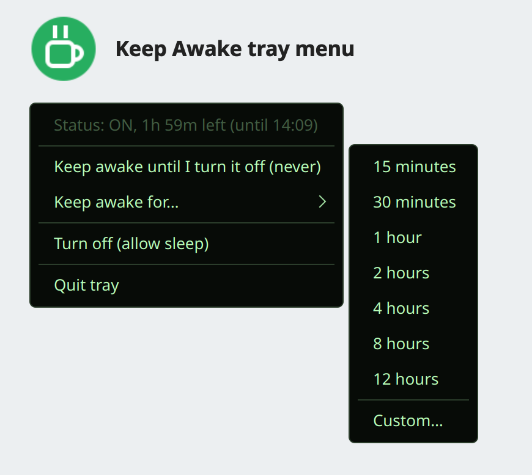

Linux Keep Awake
A tray icon that stops your computer sleeping, for as long as you choose.
Linux only. Built and tested on Fedora with KDE Plasma (Wayland). It does not stop a lid close from suspending.

- Green steaming cup when sleep is blocked, grey slashed cup when it is not
- Keep awake for 15 minutes up to 12 hours, a custom number of minutes, or until you turn it off
- The timer runs in a background process, so it still ends on time if you quit the tray
- Also a command:
keepawake on 1800,keepawake off,keepawake status
Install (adds an app-menu entry, optional autostart)
git clone https://github.com/kranmal/linux-keepawake && cd linux-keepawake && pip install --user -r requirements.txt && ./install.sh --autostartRun
keepawake-trayNo tray? Use the command
keepawake on 3600